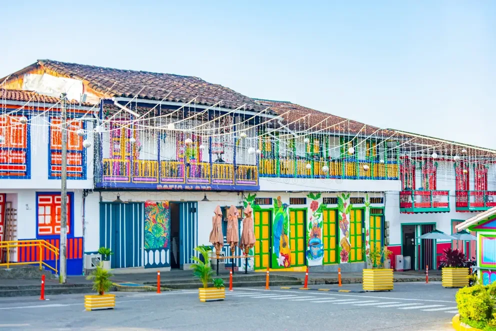

Dag 5 · zondag 22 nov · koffie, paarden en uitzicht
Filandia is het rustigere zusje van Salento: hetzelfde kleurrijke koloniale karakter, minder souvenirwinkels en betere panorama's. De Rough Guide vindt de plaza beter bewaard dan die van Salento. Op zondag staat er een markt op het plein en komen veel Colombianen op weekenduitstap.
Lonely Planet geeft Filandia een volle dag: koffie op de plaza, een rit te paard door de heuvels, de houten uitkijktoren Colina Iluminada en brulapen in de Reserva Barbas-Bremen.

📅 Dagplan
08:00 · willy vanaf de plaza van Salento (elk uur op het uur)
08:45 · koffie bij Mocafé en de zondagsmarkt · retourticket voor 18:10 meteen kopen
09:30 · 🐴 paardrijden (optie A) of vanaf ±06:00 🐒 brulapen in Barbas-Bremen (optie B)
13:00 · lunch bij Helena Adentro, vraag een tafel op het terras
15:00 · mandenvlechters in de Casa del Artesano (Cra 5 / Calle 6), mandje vlechten vanaf COP 20.000 (≈€5,6)
16:30 · 🗼 Mirador Colina Iluminada, 1 km buiten het dorp
18:10 · laatste willy terug · ±18:50 in Salento · daarna ManoNegra Taproom
Rural Adventure (Finca Akila, La India): 3 uur met vaquero langs koffievelden naar de Río Barbas en de Quebrada La Plata, koffie bij de start, snack aan de rivier. Helm en regenkledij inbegrepen. COP 220.000 (≈€61) p.p., minimum 2, gids in het Engels te vragen. Gratis annuleren tot 5 dagen vooraf.
Status: WhatsApp-aanvraag verstuurd op 5 nov (vervoer vanuit Salento, betaling) — wacht op antwoord van David (+57 312 834 4386).
Nevelwoud in een kloof met troepen brulapen, enkel 's ochtends vroeg actief: start ±6u, 3–5 uur wandelen, alleen met gids. Horen doe je ze bijna zeker, zien is niet gegarandeerd. Georganiseerde tour ±US$105 p.p. Kies je dit, dan vallen de paarden weg.
• Koop je retourticket voor de willy bij aankomst — op zondag loopt de laatste snel vol
• De uitkijktoren sluit om 18:00: vertrek uiterlijk 17:45 voor de willy van 18:10
• Waterschoenen of oude sneakers voor de rit door de rivier · regenjas mee
• Koffiefinca staat als optie in Salento (Las Acacías): hier gewoon een kop op de plaza